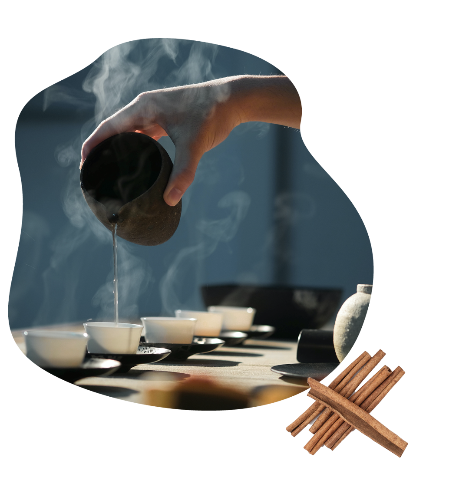
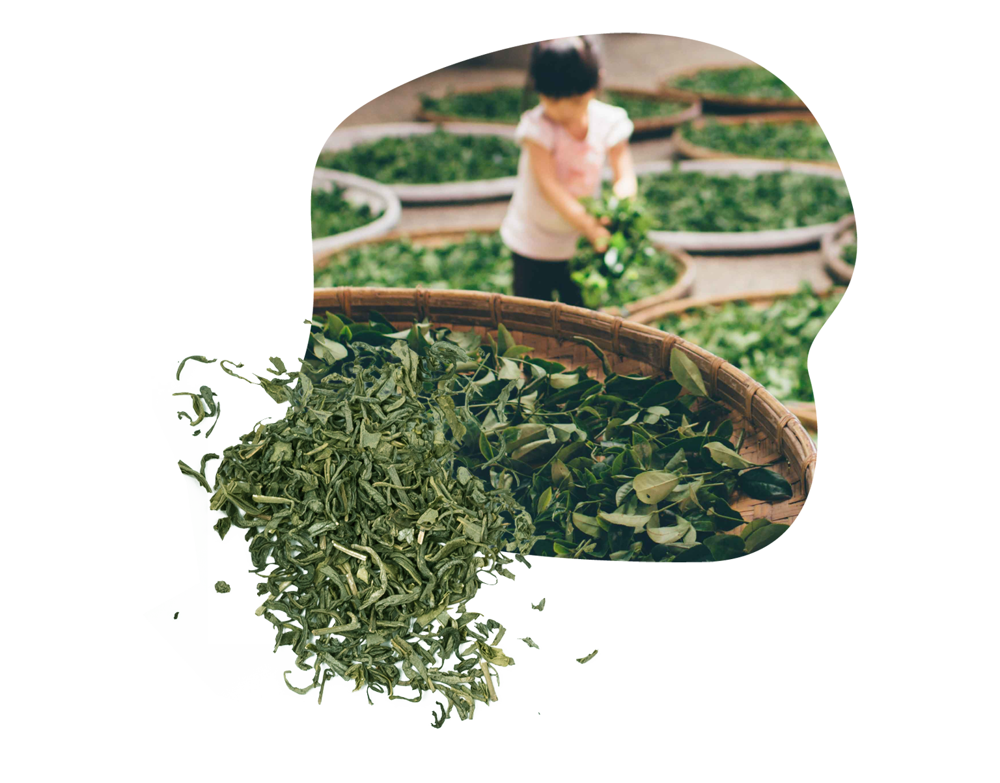

「活在當下」的意義是什麼呢？琅茶相信，是仔細欣賞、品味每個「相遇」—— 時光不逆流，深刻的瞬間砌成真實生活
材料介紹
茶葉種類依照發酵程度可分為不發酵茶(綠茶)、半發酵茶(包種茶、烏龍茶與鐵觀音)、及全發酵茶(紅茶)。 製程依照萎凋程度、發酵程度、殺菁、揉捻(整形成條索狀、與包布球之團揉)、等變化出各式不同茶葉。

十多年的潛心研發，茶類具休閒與療癒、放鬆感的飲品，我們獨創全球，是第一個「喝」的茶品。想傳遞給世人的是，台灣濃濃的人情味與源源不絕的休閒甜品創意美學。
茶藝故事
品牌理念

台灣是品茶最完美的地方：絕佳風土，極致工藝。而你我就生活在這樣的恩寵裡。 琅茶走訪山林、反覆杯測，每季嚴選上質茶園在最適天氣時辰，由優秀茶師採製的「單品茶」 (Single Origin) 為每支「單品茶」編號，與時俱進，售完不再，不混茶，以味覺印記每片山林不同時節的純粹美好。

白茶為輕醱酵茶，採一心、一心一葉至二葉，成茶表面滿披白毫，色澤顯白，茶湯顏色極淡，故稱為白茶，是中國特產茶葉之一，台灣具有發展潛力，但目前並無推廣。其製茶特色為不炒不揉，僅以烘菁方式殺菁，因茶菁原料較為幼嫩，製茶過程較為溫柔，故成茶保留大量白毫。
商品特色
品牌堅持

喝一杯單品茶的趣味無窮，山頭細心照料的葉菁，在土壤節氣的滋養下，經由絕佳的製茶工藝，成為手上這杯冷暖隨意的茶湯。產地、品種、發酵、烘焙、沖泡手法… 造就千變萬化的茶香滋味。琅茶貪心地搜羅俱全，清楚呈現「茶的二三事」——每次品茗都是香韻美感的練習。 喝好茶，是一趟回不去的味覺旅行：你偏愛輕發酵的清揚，或重發酵的底蘊,你著迷重烘焙的堅果火香，或輕烘焙的甜潤,請盡情探索玩味、雲遊台灣茶的層山峭嶺，開展好茶地圖，認識自己的味蕾，找到屬於你「琅琅上口」的好茶。
2020.07.09
新品茶類組合『禪香曲』已上架,特殊優惠搶購中!
2020.07.09
口碑第一!隋棠推薦小資女最愛茶葉排行榜